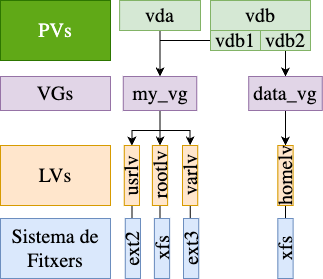
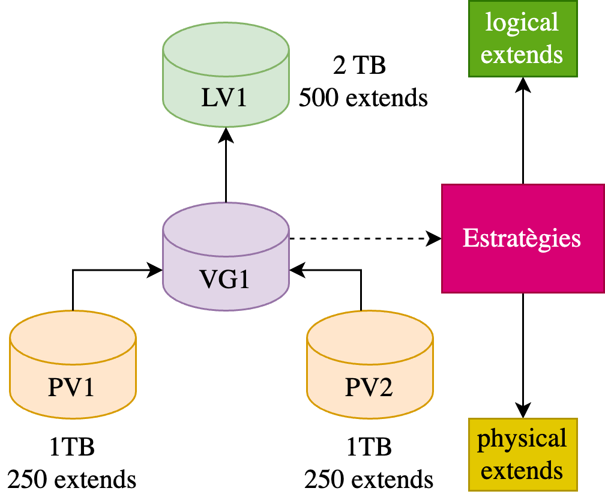
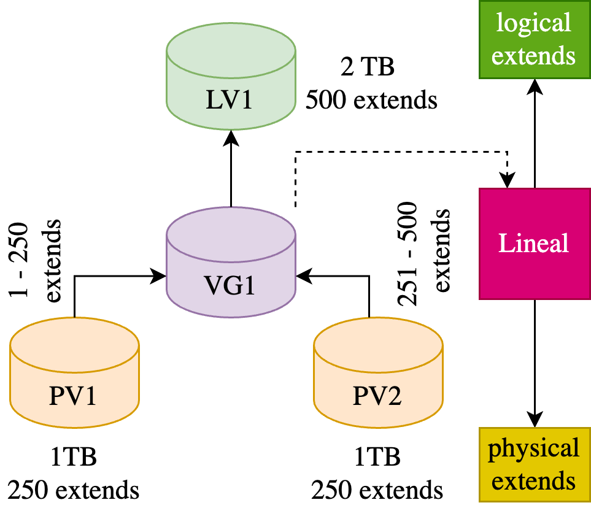
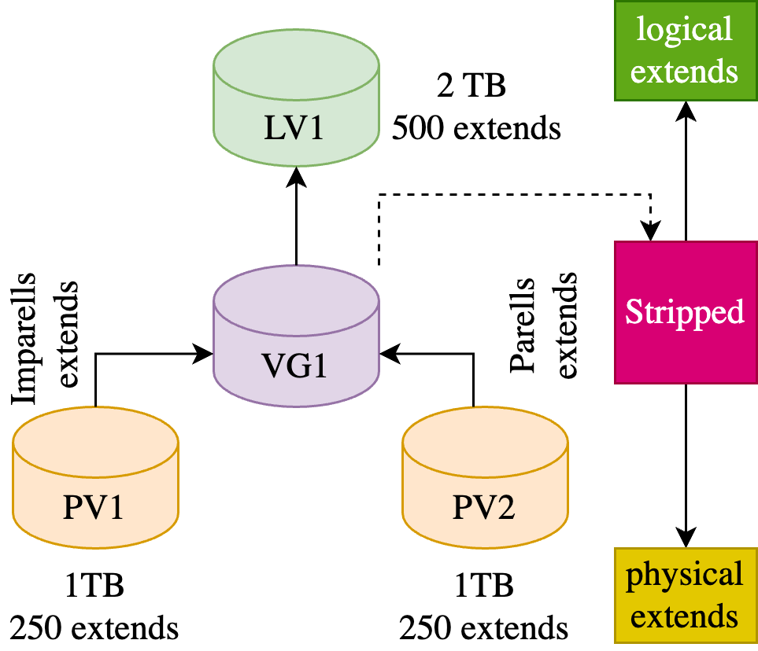
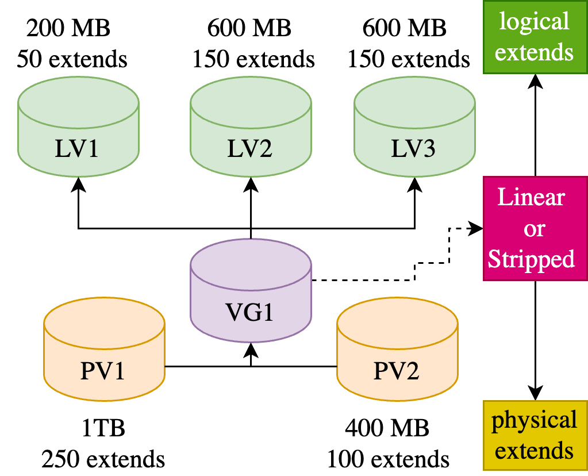
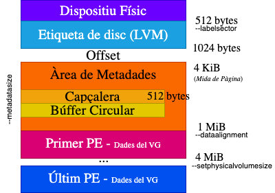
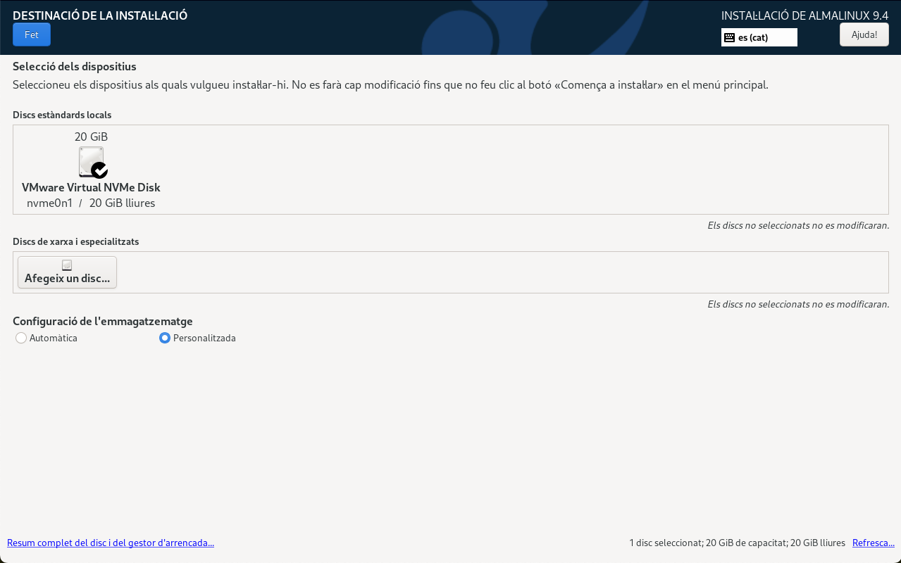
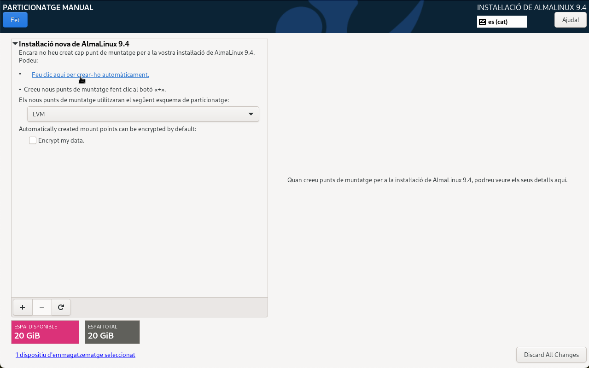
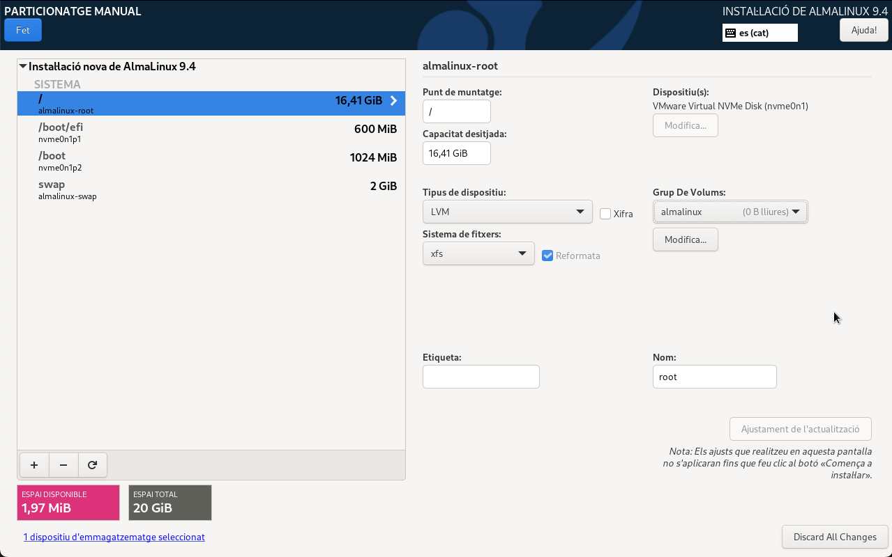

Sistema de fitxers (III)
Unitat 3 · Administració i Manteniment de Sistemes i Aplicacions (AMSA)
Introducció a LVM
Contextutalització
Imaginem que disposem d’un servidor amb un únic disc dur, dividit en quatre particions. Aquestes particions són:
Què passa si la partició /home s’omple i la resta de particions tenen espai lliure?
La solució tradicional seria redimensionar les particions per alliberar espai per a /home.
➡️ Això implica complexitat i possibilitat d’errors.
Per tant, necessitem una solució més flexible que ens permeti redimensionar les particions sense haver de moure dades i en temps real.
Introducció a LVM
Logical Volume Manager (LVM) és un sistema de gestió de discos que permet als administradors gestionar l’espai de disc de manera més flexible que amb les particions tradicionals, resolent problemes comuns.
En la situació anterior, LVM ens permetria en temps real i sense aturar el sistema:
- Redimensionar les particions
/vari/tmpper alliberar espai per a/home. - Redimensionar la partició
/homea partir de l’espai alliberat.
o bé també ens permetria:
- Afegir un nou disc dur físic al servidor.
- Utilitzar aquest disc dur per a augmentar l’espai de la partició
/home.
Crear, eliminar, redimensionar i moure particions en temps real.
Característiques de LVM
Aprovisionament: Permet combinar la capacitat de diferents dispositius físics per crear un únic o múltiples volums vírtuals. Per exemple, es poden combinar quatre discs durs de 1TB per crear un únic volum virtual de 4TB.
Elasticitat: Permet augmentar o disminuir l’espai assignat a un volum virtual, sense necessitat de reiniciar el sistema. Per exemple, si un volum virtual s’està quedant sense espai, es pot augmentar la seva mida o reduir-la.
Escalabilitat: Permet afegir o eliminar dispositius físics al grup de volums per augmentar o disminuir l’espai d’emmagatzematge segons les necessitats. Per exemple, si es necessita més espai d’emmagatzematge, es poden afegir nous discs físics.
Resiliència: Atorga la capacitat de crear còpies de seguretat de les dades per protegir-les davant possibles errors o danys. Per exemple, es poden crear snapshots o miralls (mirroring).
Components de LVM
PV (Physical Volume): Dispositiu físic que es pot utilitzar per emmagatzemar dades. Per exemple, un disc dur, una partició, un dispositiu RAID, etc.
LV (Logical Volume): Bloc de dades que es pot utilitzar per emmagatzemar dades i contenir el seu propi sistema de fitxers. Equivalent a una partició de disc en un sistema sense LVM.
VG (Volume Group): Agrupació de LVs i PVs en una unitat administrativa. Un VG pot contenir diversos PVs i LVs.

Mapeig i Extensions
PE (Physical Extent)
És la unitat mínima d’emmagatzematge que es pot assignar a un PV. Normalment, un PE té una mida de 4MB.
LE (Logical Extent)
És la unitat mínima d’emmagatzematge que es pot assignar a un LV. Per exemple, si un LE té una mida de 4MB, un LV de 1GB tindrà 256 LE.
Observacions
- Cada VG s’encarrega de gestionar l’emmagatzematge físic (physical extents) mappejant-lo en emmagatzematge lògic (logical extents).
- Els PE i LE tenen la mateixa mida però són diferents en funció de l’estrategia de mapeig.

Estratègies de Mapeig


Exemple i Consideracions

Es poden utilitzar dispositius de diferents mides i velocitats.
Un PV només pot pertànyer a un VG.
Un LV només pot pertànyer a un VG.
Un VG pot contenir diversos PVs i LVs.
Les funcions de mirror i snapshot requereixen més d’un PV.
Snapshots
Els snapshots són còpies instantànies d’un LV en un moment concret. El seu funcionament és incremental: només es copien les dades que han canviat des de l’últim snapshot.
Per què són útils?
- Còpies de seguretat: Realitzar còpies de seguretat de les dades sense aturar el sistema.
- Restauració: Restaurar les dades a un estat anterior.
- Tests: Provar canvis en el sistema sense afectar les dades originals.
Compte!
Les instantànies ocupen espai en el VG. Per tant, si es crea una instantània i després es sobreescriu completament el LV original, l’instantània hauria de ser almenys tan gran com el LV original per poder emmagatzemar tots els canvis.
LVM a Linux
Paquet lvm2
En la majoria de les distribucions de Linux, el paquet lvm2 permet la creació i gestió de dispositius LVM.
El funcionament del paquet lvm2 és similar en totes les distribucions de Linux. Per tant, les instruccions d’ús són similars i no importa la distribució que s’utilitzeu.
Creació de PVs
On: PV pot ser un disc dur, una partició, un dispositiu RAID, etc.
- –dataalignment mida[Unitat]: Alinia el començament del PV.
- –dataalignmentoffset mida[Unitat]: Offset per modificar alineació de dades.
- –labelsector sector: Per defecte, el PV està etiquetat amb un identificador LVM2 al seu segon sector (sector 1). Això us permet utilitzar un sector diferent a prop de l’inici del disc (entre 0 i 3).
- –metadatasize mida[Unitat]: Mida de les metadades.
- –setphysicalvolumesize mida[Unitat]: Mida dels PE.
- –longhelp: Mostra totes les opcions (semblant a
man pvcreate). - –uuid uuid: Assigna un UUID al PV.
Ús tradicional: pvcreate /dev/sdb sense opcions.
Organització interna dels PVs

Exemples de l’ús de pvcreate
- Inicialització a partir d’un disc dur amb alineació de dades de 1MB començant des del sector 7.
- Inicialització a partir d’una partició amb un UUID específic.
- Inicialització a partir d’un raid amb mida de metadades 128MB i 8MB per PE (enlloc de 4MB).
Modificar PVs amb pvchange
- –all: Aplica l’acció a tots els PVs (no cal especificar el PV).
- –addtag tag: Afegeix una etiqueta al PV.
- –deltag tag: Elimina una etiqueta del PV.
- –longhelp: Mostra totes les opcions (semblant a
man pvcreate). - –uuid uuid: Assigna un UUID al PV.
- –allocatable y/n: Activa o desactiva l’assignació de PE al PV.
- –autobackup y/n: Activa o desactiva la còpia de seguretat automàtica de les metadades.
Redimensionar PVs amb pvresize
- –setphysicalvolumesize mida[Unitat]: Redimensiona el PV.
- –longhelp: Mostra totes les opcions (semblant a
man pvresize).
Consideracions pràctiques
pvresizeredimensiona el PV, però no redimensiona les particions o els sistemes de fitxers que conté. Hauràs de fer això manualment si és necessari.pvresizerefusarà reduir un PV si té extensiones assignades més enllà del nou final. Hauràs de moure o eliminar aquestes extensions primer.pvresizepermet redimensionar un PV encara que estigui inclòs en un VG amb LVs actius.
Exemples pvresize
- Expandir un PV després d’ampliar la partició per utilitzar tot el nou espai disponible.
- Reduir un PV abans de reduir la partició (assegurar-se que la mida del PV és adequada per a la nova mida de la partició).
Eliminar PVs amb pvremove
pvremoveelimina totes les metadades del PV, però no elimina les dades.pvremoveno permet eliminar PVs que estiguin en ús. Hauràs de moure o eliminar les extensions primer.pvremoveno permet eliminar PVs que formin part d’un VG. Hauràs de treure el PV del VG primer.
Per eliminar les dades del PV, hauràs de sobreescriure el PV amb zeros dd if=/dev/zero of=PV bs=1M count=1 o bé formatejar el dispositiu.
Obtenir informació pvs
- –allpvs: Mostra tots els PVs, inclosos els PVs inactius.
- –all: Mostra tots els dispositius que no han estat inicialitzats com a PVs.
- –noheadings: No mostra la capçalera (bona combinació amb
grep). - –devices PV: Restringeix la sortida als PVs especificats.
- –options String: Permet seleccionar les columnes a mostrar. Per a més informació, consulteu
pvs -o help. - –longhelp: Mostra totes les opcions (semblant a
man pvs).
Altres opcions per a visualitzar información són: pvdisplay i pvscan. La principal diferència és que pvdisplay mostra la informació de tots els PVs, mentre que pvscan escaneja tots els dispositius per trobar PVs.
Inicialització de VGs
- –clustered y/n: Activa o desactiva el VG per a l’ús en un clúster.
- –maxlogicalvolumes nombre: Número màxim de LVs que es poden crear en el VG.
- –maxphysicalvolumes nombre: Número màxim de PVs que es poden afegir al VG.
- –physicalextentsize mida[Unitat]: Mida dels PE.
- –metadatasize mida[Unitat]: Mida de les metadades.
- –alloc [contiguous|cling|normal|anywhere]: Estratègia d’assignació de PE.
- –longhelp: Mostra totes les opcions (semblant a
man vgcreate).
Quan un VG s’inicialitza a partir d’un PV, els valors de la mida de les metadades, començament dels PE,… es prenen del PV, encara que s’hagin especificat opcions diferents amb vgcreate. ➡️ si voleu canviar-ho, pvremove. I després vgcreate amb les opcions desitjades.
Augmentar o Reduir VGs amb vgextend i vgreduce
vgextendpermet afegir PVs no inicialitzats. En aquest cas,vgextendinicialitzarà els PVs amb les opcions especificades de--labelsector,--metadatasize,--metadataignore,--pvmetadatacopies,--dataalignment,--dataalignmentoffset.vgreducedetecta que un o més PVs estan perduts, necessitavgreduce --removemissingper fer que les metadades del VG siguin consistents de nou.
Altres operacions amb VGs
- Modificar les propietats d’un VG
- Eliminar un VG
- Mostrar informació detallada d’un VG
Totes aquestes comandes tenen opcions similars a les ja vistes per a pvchange, pvremove, pvs, pvdisplay i pvscan. Per a més informació, consulteu el manual de cada comanda.
Inicialització de LVs
- -n|–name nom: Nom del LV.
- -L|–size mida[Unitat]: Mida del LV en unitats com MiB,GiB,TiB,….
- -l|–extents nombre: Defineix com un % del VG o bé com un nombre enter.
- -i|–stripes nombre: Defineix el nombre de stripes a utilitzar.
- -I|–stripesize mida[Unitat]: Defineix la mida de les stripes.
- -m|–mirrors nombre: Defineix el nombre de miralls a utilitzar.
- -s|–snapshot: Crea un snapshot del LV.
- -c|–chunksize mida[Unitat]: Defineix la mida dels chunks.
- -C|–contiguous y/n: Activa o desactiva l’assignació de PE contigus.
- -p|–permission r|rw: Defineix els permisos del LV.
- -t|–thinpool VG: Crea un thin pool LV.
- –longhelp: Mostra totes les opcions (semblant a
man lvcreate).
Consideracions pràctiques sobre lvcreate (I)
lvcreatecrea un nou LV en un VG. ➡️ Assigna extensions lògiques a les extensions físiques lliures del VG.
Què passaria si no hi ha prou espai lliure al VG? Hauríem d’ampliar el VG amb altres PVs (vgextend), o bé reduir o eliminar els LV existents (lvremove, lvreduce). Aquesta és una consideració important a tenir en compte quan es treballa amb grans volums de dades.
lvcreatepermet especificar quins PVs utilitzarà un nou LV. ➡️lvcreateassignarà extensió físiques només dels PVs especificats. Això pot ser útil quan es vol controlar l’assignació d’espai en un sistema amb múltiples PVs.lvcreatetambé pot crear LV RAID especificant un tipus de LV en crear el LV. ➡️ Diferents nivells de RAID requereixen diferents nombres de PVs únics en el VG per a l’assignació. Això pot ser útil per a la redundància de dades i la tolerància a fallades.
Consideracions pràctiques sobre lvcreate (II)
lvcreatetambé pot crear thin pools i cache pools. ➡️ Aquests no són utilitzables com a dispositius de bloc estàndard, però els noms dels LV actuen com a referències. Aquests pools ens poden interesar en servidors on molts usuaris comparteixen recursos d’emmagatzematge i es volen limitar els recursos d’emmagatzematge per usuari.lvcreatetambé pot crear LV thin i LV VDO. ➡️ Aquests es creen amb una mida virtual en lloc d’una mida física. Permeten sobreprovisionament i compressió de dades. ➡️ Tots el usuaris tenen dret a més espai del que realment tenen.Podeu utilitzar qualsevol
--sizeo--extentsper especificar la mida del LV.En cas de no especificar un nom, es generarà un nom de LV amb el prefix lvol i un sufix numèric únic. Això pot ser útil quan es vol crear múltiples LVs de forma ràpida i eficient.
Altres operacions amb LVs
Els LVs ens permeten les mateixes operacions amb opcions similars a les ja vistes per a PVs i VGs:
- Mostrar informació detallada d’un LV:
lvs,lvdisplay,lvscan. - Modificar les propietats d’un LV:
lvchange. - Eliminar un LV:
lvremove. - Incrementar o disminuir la mida d’un LV:
lvextend,lvreduce.
Per a més informació, consulteu el manual de cada comanda o bé executeu comanda --help.
Casos Pràctics
Cas Pràctic 01: LVM i BootLoaders
Durant la realització d’una instal·lació d’un sistema operatiu, s’ha de decidir si utilitzar LVM per a la partició /boot o /boot/efi. Creus que és recomanable utilitzar LVM per a aquestes particions?
No, no és recomanable utilitzar LVM per a la partició /boot o /boot/efi. Els BootLoaders com GRUB no poden llegir els sistemes de fitxers LVM. Per tant, és millor utilitzar particions tradicionals per a /boot i /boot/efi.
Durant el procés d’arrancada, el bootloader carrega el kernel i la imatge initramfs des de la partició /boot. Si aquesta partició està en un sistema de fitxers LVM, el bootloader no podrà llegir-la i no podrà carregar el sistema operatiu.
Cas Pràctic 02: Dispositiu compartit (USB)
Assumeix que tens un disc dur extern de 2TB i vols fer-ho servir per guardar còpies de seguretat de dos usuaris. El disc es connecta per usb físicament als dos dispositius. L’usuari 1 necessita 1TB i l’usuari 2 necessita 500GB. Assumeix que l’usuari 1 utilitza Windows i l’usuari 2 utilitza Linux. Recomanaries utilitzar LVM per aquest cas d’ús?
No, LVM és una tecnologia específica de Linux i no és compatible amb Windows. Per tant, no és recomanable utilitzar LVM per aquest cas d’ús. En aquest cas, seria millor utilitzar particions tradicionals per a cada usuari. Podeu crear dues particions: una de 1TB formatada amb NTFS per a l’usuari 1 (Windows) i una altra de 500GB formatada amb ext4 per a l’usuari 2 (Linux). La resta de l’espai es podria deixar sense particionar o crear una partició compartida si es desitja.
Cas Pràctic 02: Dispositiu compartit (NAS)
Assumeix ara que el disc dur extern s’utilitza en un NAS on s’ofereix emmagatzematge compartit per a tots els usuaris en xarxa local. En aquest cas, recomanaries utilitzar LVM per aquest cas d’ús?
Sí, en aquest cas, LVM pot ser una bona opció per a la gestió de l’espai d’emmagatzematge compartit. LVM permet crear volums lògics que es poden redimensionar en temps real. Cada usuari podria tenir el seu LV per emmagatzemar les seves dades. Com el NAS és un servidor de xarxa, els usuaris podrien accedir als seus LVs a través de la xarxa; independentment del sistema operatiu que utilitzin els usuaris en els seus dispositius.
Cas Pràctic 03: Servidor de Base de Dades
Considerant que hem de configurar un servidor de base de dades amb 4 discos durs de 1TB cadascun. Quins avantatges i desavantatges tindria la implementació de LVM en aquest context?
LVM permet la creació de volums lògics que es poden distribuir en diversos discos físics, cosa que pot millorar el rendiment mitjançant el striping. ➡️ Aquesta configuració pot ser útil per a bases de dades que requereixen un alt rendiment d’E/S. Però, també augmenta la complexitat i pot induir a overheads addicionals dels Volums Lògics.
A més, LVM admet instantànies, que poden ser útils per a les còpies de seguretat i la recuperació de les dades. Ara bé, si les instantànies es guarden en el mateix disc físic que la base de dades, i aquest disc falla, es perdran tant la base de dades com les instantànies.
També permet afegir o eliminar discos físics sense temps d’inactivitat, cosa que millora la disponibilitat del servidor de base de dades. ➡️ Ens permet la seva ampliació en un futur sense haver de parar el servei.
Cas Pràctic 04: Errors i Fallades (I)
Imagineu-vos que esteu treballant amb un grup de volums (VG1) que conté diversos discos físics, entre ells el PV1. A més, teniu un altre grup de volums (VG2) en un disc físic diferent (PV2) on guardeu les vostres instantànies. Què passaria amb les metadades de LVM i les instantànies si el disc físic PV1 falla?
Si les metadades de LVM no estan en el disc fallat PV1, llavors els volums lògics que no estaven en el disc fallat segueixen estant disponibles. ➡️ En aquest cas, les metadades de LVM no es perden i es pot recuperar la informació dels volums lògics del VG1.
No obstant això, si el disc fallat PV1 contenia dades d’un volum lògic, aquestes dades es perdran a menys que tinguem una instantània. A més, si el disc fallat contenia una part d’un volum lògic que s’estenia per diversos discos (com en el cas d’un volum lògic distribuït o striped), tot el volum lògic pot quedar inutilitzable. ➡️ En aquest cas, les metadades de LVM es perden i no es pot recuperar la informació dels volums lògics del VG1.
VG2 conté les instantànies, per tant, si el disc físic PV1 falla, les instantànies no es perdran. ➡️ Això permet restaurar les dades del volum lògic original del VG1 a partir de les instantànies del VG2.
Cas Pràctic 05: Escalabilitat d’Apps (I)
Una empresa està experimentant un ràpid creixement i necessita implementar un nou servidor per donar suport a una nova aplicació crítica per al negoci. El departament d’IT té pressupost limitat i només té disponible un emmagatzematge de 2TB per a aquest nou servidor. L’aplicació requereix un mínim de 1TB d’emmagatzematge per funcionar correctament, però es preveu que el seu ús creixerà ràpidament en els propers mesos.
Com a administrador us plantejeu la possibilitat d’utilitzar el thin provisioning de LVM per donar suport a l’aplicació en creixement. Aquesta tècnica permet sobreprovisionar l’espai d’emmagatzematge, és a dir, assignar més espai del que realment teniu. Això és possible perquè el thin provisioning de LVM només assigna l’espai d’emmagatzematge real a mesura que l’aplicació l’utilitza.➡️ Si assigneu 4TB d’emmagatzematge a l’aplicació en un VG format pel disc de 2TB, inicialment només s’utilitzarà l’espai que l’aplicació necessita realment. Així, podreu planificar una ampliació del disc dur a 4TB en el futur sense haver de parar el servei.
Cas Pràctic 05: Escalabilitat d’Apps (II)
No obstant això, que pot passar si les vostres previsions no són correctes i el creixement es mes rápid de l’esperat. ➡️ L’aplicació intenta escriure més de 2TB de dades al disc.
El thin provisioning de LVM no evitarà que l’aplicació s’aturi o es produeixin errors d’E/S quan l’aplicació excedeixi la capacitat real. ➡️ Quan l’aplicació intenti escriure més de 2TB de dades al disc, es produirà un error d’E/S, ja que no hi haurà prou espai d’emmagatzematge disponible per emmagatzemar les dades.
En aquest cas, es necessitarà afegir més espai d’emmagatzematge al grup de volums i ampliar el volum lògic thin provisioned per donar suport a l’aplicació en creixement.
Cas Pràctic 05: Escalabilitat d’Apps (III)
En la situació anterior, heu decidit utilitzar el thin provisioning de LVM per donar suport a l’aplicació en creixement. Però, com a administrador de sistemes, us preocupa que l’aplicació pugui aturar-se o produir errors d’E/S si l’espai d’emmagatzematge s’omple ràpidament. Què faríeu per reduir el risc d’aturades i errors d’E/S en aquest escenari?
Una opció seria implementar un sistema de monitoreig i alertes que supervisi l’ús de l’espai d’emmagatzematge del grup de volums. Quan l’ús d’emmagatzematge superi un determinat llindar, el sistema generaria una alerta per afegir més espai d’emmagatzematge al grup de volums i ampliar el volum lògic thin provisioned per donar suport a l’aplicació en creixement.
Exercicis i Laboratoris
Laboratoris
- Laboratori 01: Instal·lació de LVM a AlmaLinux
- Laboratori 02: Gestió de LVM a AlmaLinux
Laboratori 01: Instal·lació de LVM a AlmaLinux
Requeriments
- Màquina virtual amb 1 disc dur de 20 GB, 1 GB de RAM i 1 CPU.
- Imatge ISO d’AlmaLinux.
Tasques
- Instal·lar AlmaLinux i configurar LVM durant la instal·lació.
- Crearem un PV a partir del disc dur principal de 20GB.
- Crearem un VG anomenta almalinux.
/serà un LV amb un sistema de fitxers xfs de 16,4 GB (almalinx-root)./bootiboot/efiseran particions tradicionals de 600MiB i 1024MiB respectivament.swapserà un LV de 2GB (almalinux-swap).
Laboratori 01: Selecció de dispositius
Laboratori 01: Configuració LVM
Laboratori 01: Configuració de les particions
Laboratori 02: Configuració manual LVM
Requeriments
- Afegir un disc dur secundari de 10 GB a la màquina virtual.
Tasques
- Crear un PV a partir del disc dur secundari.
- Crear un VG anomenat
datavga partir del PV. - Crear un LV anomenat
homeamb un sistema de fitxers ext4 de 5GB. - Muntarem el LV
homea/home. - Redimensionarem el LV en calent.
Laboratori 02: Creació de PVs, VGs i LVs
- Creació d’un PV amb el dispositiu
/dev/vdb:
- Creació d’un VG anomenat
datavgamb el PV/dev/vdb:
- Creació d’un LV de 5GB anomenat
homeen el VGdatavg:
Laboratori 02: Creació de sistema de fitxers i muntatge
- Creació d’un sistema de fitxers ext4 en el LV
home:
- Muntatge del LV
homeen el directori/home:
Laboratori 02: Ampliació LVs
- Ampliació del LV
homea 7GB:
- Redimensionar el sistema de fitxers ext4:
Laboratori 02: Reducción LVs
- Reducció del sistema de fitxers ext4:
- Reducció del LV
homea 6GB:
Exercicis
That’s all
Take Home Message
- LVM és una eina potent que simplifica la gestió de l’espai d’emmagatzematge en sistemes Linux.
- Ofereix als administradors de sistemes la flexibilitat de crear, modificar i eliminar particions de manera dinàmica sense necessitat d’aturar el sistema.


Unitat 3 · Administració i Manteniment de Sistemes i Aplicacions (AMSA) 🏠